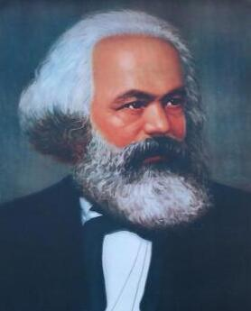
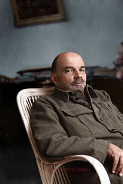
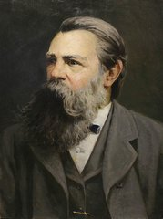
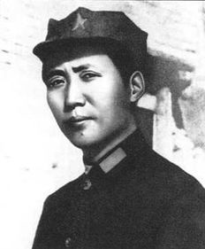

伟人们

卡尔·马克思（全名：卡尔·海因里希·马克思，Karl Heinrich Marx，1818年5月5日-1883年3月14日），出生于特里尔，马克思主义的创始人之一，第一国际的组织者和领导者，马克思主义政党的缔造者，全世界无产阶级和劳动人民的革命导师，无产阶级的精神领袖，国际共产主义运动的开创者。

弗拉基米尔·伊里奇·列宁（1870年4月22日—1924年1月21日），原名弗拉基米尔·伊里奇·乌里扬诺夫，俄国辛比尔斯克人（现乌里扬诺夫斯克市。无产阶级革命家、政治家、理论家、思想家。曾任苏联人民委员会主席（即苏联总理）工农国防委员会主席等重要职务。

弗里德里希·恩格斯（德语：Friedrich Engels，1820年11月28日－1895年8月5日），德国思想家、哲学家、革命家、教育家、军事理论家，是全世界无产阶级和劳动人民的伟大导师和领袖、马克思主义创始人之一。

毛泽东（1893年12月26日-1976年9月9日），字润之（原作咏芝，后改润芝），笔名子任。湖南湘潭人。中国人民的领袖，伟大的马克思主义者，伟大的无产阶级革命家、战略家、理论家，中国共产党、中国人民解放军和中华人民共和国的主要缔造者和领导人，马克思主义中国化的伟大开拓者，近代以来中国伟大的爱国者和民族英雄，中国共产党第一代中央领导集体的核心，领导中国人民彻底改变自己命运和国家面貌的一代伟人